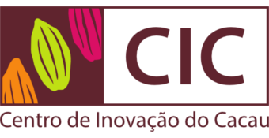

Ilhéus, Bahia, Brazil
The Centro de Inovação do Cacau (CIC)—Cacao Innovation Center—is a research and innovation hub in Ilhéus, Bahia, dedicated to building, consolidating, and disseminating knowledge about quality cacao and chocolate. Located at the Parque Científico e Tecnológico do Sul da Bahia (PCT Sul) on the UESC campus, CIC focuses on improving productivity, quality, and traceability of cacao beans from the Sul da Bahia region.
Lab Testing for Agroverse: CIC is where Agroverse sources all lab testing for cacao from Brazilian farmers. Their physical-chemical analyses verify heavy metal levels (arsenic, cadmium, lead, copper) and quality parameters, ensuring compliance with Brazilian ANVISA regulations (IN No. 160) and international standards. Every lab report delivered to Agroverse shipments from Bahia and Pará is produced at CIC's IPAF laboratory in Ilhéus.
Services: CIC offers a range of analytical services for cacao producers. All results are documented in official reports (laudos) delivered to producers, who can share this information with clients and use it to improve their production. Their analyses support market access and the process of obtaining Geographic Indication (IG) for Sul da Bahia cacao.
Chocolate Lab & Cacao Forum: CIC also houses a Chocolate Laboratory and hosts the Fórum do Cacau—a forum for sharing information among different actors in the cacao value chain, building a positive agenda for change in the cacao market.
Visiting CIC offers insight into the science behind quality cacao—the rigorous testing, traceability systems, and research that ensure the cacao from Brazil's regenerative farms meets the highest standards for safety and quality.
CIC in action—lab visits, cacao drop-offs, and the people behind quality testing.
Hear from CIC experts on cacao taste profiles and the impact of climate change on Brazilian cacao.
Christiano, director of CIC, explains the taste profile of cacao from different regions in Brazil.
How climate change is impacting Brazilian cacao supply and affecting the rest of the world.
Matheus brings cacao beans from Paulo's La do Sitio farm (Pará) to CIC in Ilhéus for lab testing—this became AGL8.
Agroverse shipments with lab reports from CIC: